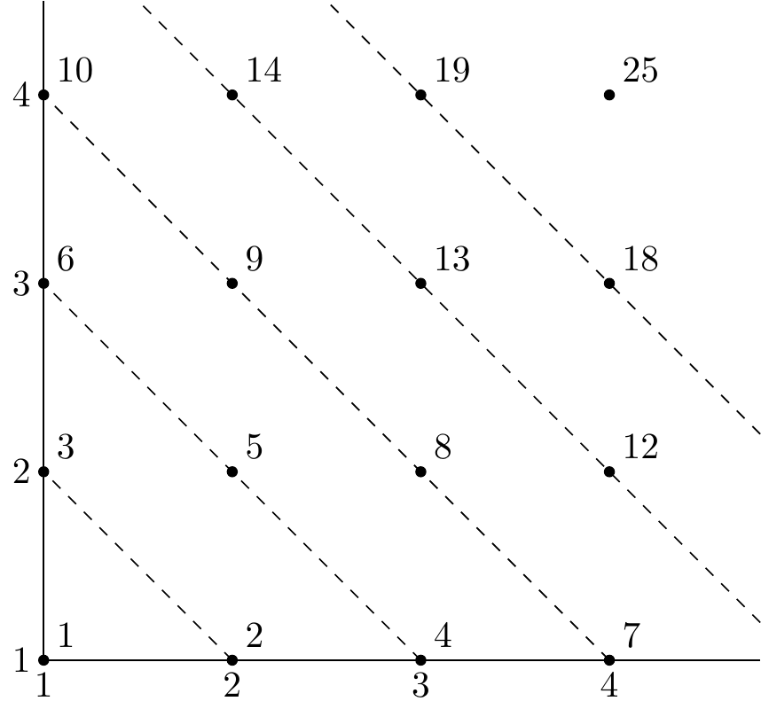

2 Elementary Number Theory
2.1 The natural numbers
Intuitively, the natural numbers consist of \(1, 1 + 1, 1+ 1 + 1, \dots\)
How do you know you have captured all natural numbers? How do you know they are all distinct?
We shall assume:
Definition 2.1 (Peano Axioms) The natural numbers, \(\mathbb{N}\), is a set containing a special element ‘\(1\)’ with an operation ‘\(+1\)’ satisfying
- \(\forall \; n \in \mathbb{N},\ n + 1 \neq 1\);
- \(\forall \; m, n \in \mathbb{N},\ \text{ if } m \neq n,\ \text{ then } m + 1 \neq n + 1\)
- for any property \(P(n)\), if \(P(1)\) is true and \(\forall \; n \in \mathbb{N}, P(n) \implies P(n + 1),\) then \(P(n)\) is true for all natural numbers
iii is called the induction axiom.
i and ii capture the idea that any two natural numbers are distinct; iii captures our intuitive notion that the list5 is complete (i.e. encompasses all natural numbers).6
Now we can write 2 for \(1 + 1\), 3 for \(1 + 1 + 1\), etc, and we can define an operation ‘\(+ k\)’ for any natural number \(k\):
\(\hspace{1cm}\) for every natural number \(n\), we know \(n + (k + 1) = (n + k) + 1\);
\(\hspace{1cm}\) and so by induction, taking \(P(k)\) = “‘\(+k\)’ is defined”, proved.
Similarly, we can define multiplication, powers, etc. You may check that the “normal” rules of arithmetic apply:
\[\begin{align} &1.\ \forall \; a, b, \in \mathbb{N} & &a + b = b + a & &(+ \text{ is commutative}); \\ &2.\ \forall \; a, b, \in \mathbb{N} & &ab = ba & &(\times \text{ is commutative}); \\ &3.\ \forall \; a, b, c \in \mathbb{N} & &a + (b + c) = (a + b) + c & &(+ \text{ is associative}); \\ &4.\ \forall \; a, b, c \in \mathbb{N} & &a (b c) = (a b) c & &(\times \text{ is associative}); \\ &5.\ \forall \; a, b, c \in \mathbb{N} & &a (b + c) = ab + ac & &(\times \text{ is distributive over }+); \end{align}\]
We can define \(a < b\) if \(a + c = b\) for some \(c \in \mathbb{N}\). You may want to check
\[\begin{align} &6.\ \forall \; a, b, c & a < b &\implies a + c < b + c \\ &7.\ \forall \; a, b, c & a < b &\implies a c < b c \\ &8.\ \forall \; a, b, c & a < b \text{ and } b < c &\implies a < c \\ &9.\ \forall \; a & &\lnot (a < a). \end{align}\]
Recall the induction axiom: if \(P(1)\) holds and \(\forall \; n \in \mathbb{N}, P(n) \implies P(n+1)\), then \(P(n)\) holds \(\forall \; n \in \mathbb{N}\). This is also known as the (weak) principle of induction (WPI). A more useful form is the Strong Principle of Induction (SPI): if
- \(P(1)\) holds and
- \(\forall \; n \in \mathbb{N}\), we have \(P(m) \;\forall \; m \leq n \implies P(n + 1)\),
then \(P(n)\) holds \(\forall \; n \in \mathbb{N}\).
In fact, WPI and SPI are equivalent. SPI \(\implies\) WPI should be fairly clear. To see WPI \(\implies\) SPI, apply the former to \(Q(n) = `P(m) \; \forall \; m \leq n'\)
Well-ordering Principle (WOP): If \(P(n)\) holds for some \(n \in \mathbb{N}\), then there is a least \(n \in \mathbb{N}\) s.t. \(P(n)\) holds. An alternative phrasing is “every non-empty subset of \(\mathbb{N}\) has a minimal element”.
Theorem 2.1 SPI is equivalent to the WOP.
Proof. To show that WOP implies SPI, we assume 1 and 2 from SPI, and show that \(P(n)\) holds \(\forall \; n \in \mathbb{N}\) using WOP.
Suppose, on the contrary, that \(P(n)\) is not true \(\forall \; n \in \mathbb{N}\). Then \(C = \{n \in \mathbb{N}: P(n) \text{ is false}\} \neq \emptyset\). By WOP, \(C\) has a minimal element, \(m\). Now \(\forall \; k < m\), \(k \notin C\) (by minimality of \(m\)), so \(P(k)\) holds \(\forall \; k < m\). But by 2 of SPI, \(P(m)\) holds, so contradicting \(m \in C\). Hence SPI holds.
To show that SPI implies WOP, suppose there is no least \(n \in \mathbb{N}\) s.t. \(P(n)\) holds. We want to show that \(P(n)\) does not hold for any \(n \in \mathbb{N}\), using SPI.
Consider \(Q(n) = `\lnot P(n)'\). Certainly \(P(1)\) is false (else \(1\) would be the minimal element), so \(Q(1)\) holds.
Given \(n \in \mathbb{N}\), suppose that \(Q(k)\) is true \(\forall \; k < n\). Then \(P(k)\) is false \(\forall \; k < n\). So \(P(n)\) is false as otherwise \(n\) would be the minimal element for which \(P\) holds. Hence \(Q(n)\) is true, and 2 of SPI holds, so \(Q(n)\) is true \(\forall \; n \in \mathbb{N}\). Thus \(P(n)\) is false \(\forall \; n \in \mathbb{N}\).
WOP enables us to prove \(P(n)\) is true \(\forall \; n \in \mathbb{N}\) as follows: If not, then there is a minimal counterexample, and we try and derive a contradiction.
2.2 The integers
The integers, written \(\mathbb{Z}\), consist of all symbols \(n, -n\), where \(n \in \mathbb{N}\), and \(0\).
We can define \(+\) and \(\times\) etc on \(\mathbb{Z}\) using \(\mathbb{N}\), and check that the usual rules of arithmetic hold. We also have \[\begin{align*} &10.\ \forall \; a \in \mathbb{Z} & a + 0 &= a & &(\text{identity for } +) \\ &11.\ \forall \; a \in \mathbb{Z}, & \exists \; b \in \mathbb{Z} \text{ s.t. } a + b &= 0 & &(\text{inverses for } + ) \\ \end{align*}\]
Define ‘\(a < b\)’ if \(a + c = b\) for some \(c \in \mathbb{N}\). Rules 6, 8, 9 continue to hold, but 7 must be modified
7’. \(\forall \; a, b, c \in \mathbb{Z}, a < b \text{ and } c > 0 \implies ac < bc.\)
2.3 The rationals
The rationals, written \(\mathbb{Q}\), consist of all expressions \(\frac{a}{b}\) (note this is not division as we have not defined division, it just looks the same), where \(a, b \in \mathbb{Z}\), \(b \neq 0\), and \(\frac{a}{b}\) and \(\frac{c}{d}\) are regarded as the same if \(ad = bc\).
Define \(\frac{a}{b} + \frac{c}{d} = \frac{ad + bc}{bd}\), and check it does not matter how we wrote \(\frac{a}{b}\) or \(\frac{c}{d}\).
We similarly define multiplication, and \(`\frac{a}{b} < \frac{c}{d}'\) where \(b, d > 0\) if \(ad < bc\). You can check all preceding rules apply.
In addition \[\begin{align*} 12.\ \forall \; a \in \mathbb{Q},\ a \neq 0,\ \exists \; b \ \text{ s.t. } ab &= 1 & &(\text{inverses for } \times) \end{align*}\]
Note. \(\mathbb{N} \subset \mathbb{Z} \subset \mathbb{Q}\).
2.4 Primes
Given \(a, b \in \mathbb{Z}\) we say “\(a\) divides \(b\)” if \(\exists \; c \in \mathbb{Z}\) s.t. \(b = ac\). We might also say “\(a\) is a divisor/ factor of \(b\)” or “\(b\) is a multiple of \(a\)”. We write \(a \mid b\) for \(a\) divides \(b\).
For any \(b \in \mathbb{Z}\), \(\pm 1\) and \(\pm b\) are always factors; all others are called proper.
A natural number \(n \geq 2\) is prime if its only factors are \(\pm 1\) and \(\pm n\).7 If \(n \geq 2\) is not prime, then it is composite.
Proposition 2.1 Every natural number \(n \geq 2\) can be written as a product of primes.
Proof. By induction on \(n\). True for \(n = 2\). Let \(n > 2\) and suppose that the claim holds up to and including \(n - 1\) (SPI). If \(n\) is a prime, we are done. If \(n\) is composite, then \(n = a b\) for some \(1 < a, b < n\). By the induction hypothesis, have \(a = p_1 \dots p_k\), \(b = q_1 \dots q_l\) for some primes \(p_1 \dots p_k, q_1 \dots q_l\). Hence \(n = ab = p_1 \dots p_k q_1 \dots q_l\) is a product of primes.
Theorem 2.2 There are infinitely many primes.
Proof (Euclid 300 BC). Suppose there are finitely many primes, say \(p_1, \dots, p_k\). Let \(N = p_1 \dots p_k + 1\). Then \(p_1 \nmid N\), else \(p_1 \mid (N - p_1 \dots p_k) = 1\). Clearly \(p_1 \mid 1\) is false. Likewise, none of \(p_2, p_3 \dots, p_k\) divide \(N\), contradicting the fact that \(N\) can be written as a product of primes.
Can a number have more than one factorisation in its primes? Our proof of 2.1 does not give uniqueness.
Clearly, \(21 = 3 \cdot 7\) is unique. Why is \(9049 \cdot 40099 \neq 6701 \cdot 54151\)?
We shall need:
Proposition 2.2 If \(p\) is a prime and \(p \mid ab\) then \(p \mid a\) or \(p \mid b\).
Proof is later on, just below 2.1.
2.5 Highest Common Factors
Definition 2.2 Given \(a, b \in \mathbb{N}\), a natural number \(c\) is the highest common factor (hcf), or greatest common divisor (gcd) of \(a\) and \(b\) if
- \(c \mid a\) and \(c \mid b\) “c is a common divisor of \(a\) and \(b\)”
- \(d \mid a\) and \(d \mid b \implies d \mid c\) “every common factor of \(a\) and \(b\) divides \(c\)”
We write \(c = \operatorname{hcf}(a, b)\) or \(c = \operatorname{gcd}(a, b)\), or simply \(c = (a, b)\) \[\begin{align*} \text{E.g. the factors of } &12 \text{ are } 1, 2, 3, 4, 6, 12 \\ &18 \ \phantom{are} \ 1, 2, 3, 6, 9, 18 \end{align*}\] So the common factors are \(1, 2, 3, 6\), hence \(\operatorname{hcf}(12, 18) = 6\). But if \(a\) and \(b\) had common factors \(1, 2, 3, 4, 6\) then \(a\) and \(b\) would have no \(\operatorname{hcf}\) (according to ii). Therefore, we will need to show that \(\operatorname{hcf}(a, b)\) always exists.
Proposition 2.3 (Division Algorithm) Let \(n, k \in \mathbb{N}\). Then we can write \(n = qk + r\), where \(q\) and \(r\) are integers with \(0 \leq r \leq k - 1\).
Proof. By induction on \(n\). True for \(n = 1\).
Suppose \(n - 1 = q k + r\) for some \(q, r \in \mathbb{Z}\), \(0 \leq r \leq k - 1\).
If \(r < k - 1\) then \(n = (n - 1) + 1 = qk + (r + 1)\).
If \(r = k - 1\) then \(n = (n - 1) + 1 = qk + (k - 1) + 1 = (q + 1)k\).
2.6 Euclid’s Algorithm
\[\begin{array}{c|cc|c} \text{INPUT} & a & b & a = 372,\ b = 162 \\ \hline \text{STEP } 1& a = q_1 b + r_1 & q_1, r_1 \in \mathbb{Z} & 372 = 2 \cdot 162 + 48 \\ & & 0 \leq r \leq b - 1 & \\ \text{STEP } 2& b = q_2 r_1 + r_2 & 0 \leq r_2 < r_1 & 162 = 3 \cdot 48 + 18 \\ \text{STEP } 3& r_1 = q_3 r_2 + r_3 & 0 < r_3 < r_2 & 48 = 2 \cdot 18 + 12 \\ \vdots & \vdots & \vdots & \vdots \\ \text{STEP } n& r_{n - 2} = q_n r_{n-1} + r_{n} & 0 \leq r_n < r_{n - 1} & 18 = 1 \cdot 12 + 6 \\ \text{STEP } n + 1& r_{n - 1} = q_{n + 1} r_n + r_{n + 1} & r_{n + 1} = 0 & 12 = 2 \cdot 6 & \\ \hline \text{OUTPUT} & r_n &&& \end{array}\]Note that the algorithm terminates in \(\leq b\) steps, since \(b > r_1 > r_2 > \dots \geq 0\).
Theorem 2.3 The output of Euclid’s algorithm with input \(a, b\) is \(\operatorname{hcf}(a, b)\).
Proof.
\[\begin{align*} \text{We can see } &r_n \mid r_{n - 1} \text{ (as } r_{n + 1} = 0 \text{ at STEP } n + 1 \text{)} \\ \text{so } &r_n \mid r_{n - 2} \ ( \text{STEP } n) \\ \text{so } &r_n \mid r_i \quad \forall \; i = 1, \dots n - 1 \text{ (by induction)} \end{align*}\] Hence \(r_n \mid b\) (STEP \(2\)) and \(r_n \mid a\) (STEP \(1\)).
Given \(d\) s.t. \(d \mid a\) and \(d \mid b\), \[\begin{align*} \text{we have } &d \mid r_1 \text{ (STEP 1) } \\ \text{so } &d \mid r_2 \text{ (STEP 1) } \\ \text{so } &d \mid r_i \; \forall \; i = 1, \dots n \text{ (by induction)} \end{align*}\] Therefore, \(r_n = \operatorname{hcf}(a, b)\).
Example 2.1 To obtain \(\operatorname{hcf}(87, 52)\) we run Euclid: \[\begin{align*} 87 &= 1(52) + 35 \\ 52 &= 1(35) + 17 \\ 35 &= 2(17) + 1 \\ 17 &= 17(1) \end{align*}\] so \(\operatorname{hcf}(87, 52) = 1\).
When \(\operatorname{hcf}(87, 52) = 1\), we also say that \(a\) and \(b\) are coprime. We can reverse the algorithm: \[\begin{align*} 1 &= 35 - 2 * 17 \\ &= 35 - 2*(52 - 1(35)) \\ &= - 2(52) + 3(35) \\ &= - 2(52) + 3(87 - 1(52)) \\ &= -5(52) + 3(87) \end{align*}\]
Theorem 2.4 \(\forall \; a, b \in \mathbb{N},\ \exists \; x,y \in \mathbb{Z}\) s.t. \(xa + yb = \operatorname{hcf}(a, b)\). “We can write \(\operatorname{hcf}(a, b)\) as a linear combination of \(a\) and \(b\).”
Proof (1). Run Euclid’s algorithm with input \(a\), \(b\), to obtain an output \(r_n\). At STEP \(n\), we have \(r_n = xr_{n-1} + yr_{n-2}\) for some \(x, y \in \mathbb{Z}\). But \(r_{n-1}\) is expressible as \(xr_{n-2} + yr_{n-3}\) for some \(x, y \in \mathbb{Z}\), from STEP \(n-1\), whence \(r_n = xr_{n-2} + y r_{n-3}\) for some \(x, y \in \mathbb{Z}\). Continuing by induction, we have that \(\forall \; i = 2, \dots, n-1\), \(r_n = xr_i + yr_{i - 1}\) for some \(x, y \in \mathbb{Z}\). Thus \(r_n = xa + yb\) for some \(x, y \in \mathbb{Z}\), from STEP 1 and 2.
Remark. Euclid’s algorithm not only proves that \(x, y \in \mathbb{Z}\), but it gives us a quick way to find them.
Proof (2). Let \(h\) be the least positive combination of \(a\) and \(b\), i.e. the least positive integer of the form \(xa + yb\) for some \(x, y \in \mathbb{Z}\).
We shall show that \(h = \operatorname{hcf}(a, b)\).
To see (ii) from 2.2, observe that a given \(d\) s.t. \(d \mid a\) and \(d \mid b\), then we have \(d \mid ax + by \; \forall \; x, y \in \mathbb{Z}\), so in particular \(d \mid h\).
To verify (i), suppose that \(h \nmid a\). Then we can write \(a = qh + r\) for some \(q, r \in \mathbb{Z}\) with \(0 < r < h\)8. Hence \(r = a - qh = a - q(xa + yb)\), so \(r\) is also a positive linear combination of \(a\) and \(b\), and strictly smaller than \(h\), contradicting the definition of \(h\). Therefore, \(h \mid a\) and by the same argument, \(h \mid b\).
Remark. Proof (2) tells us that \(\operatorname{hcf}(a,b)\) exists and is a linear combination of \(a\) and \(b\), but gives no way to find \(\operatorname{hcf}(a,b)\) or the coefficients \(x, y\).
Is there an solution in integers \(x, y\) to \(320x + 72y = 33\). No, as LHS is always even but the RHS is odd.
What about \(87x + 52y = 33\)? Yes, as we had \(x', y' \in \mathbb{Z}\) s.t. \(87 x' + 52 y' = 1\), so \(x = 33x'\), \(y = 33y'\) is an integer solution.
Corollary 2.1 (Bezout's Theorem) Let \(a, b \in \mathbb{N}\). Then the equation \(ax + by = c\) has a solution in integers \(x, y\) iff \(\operatorname{hcf}(a, b) \mid c\).
Proof. Let \(h = \operatorname{hcf}(a, b)\).
Suppose there are \(x, y \in \mathbb{Z}\) s.t. \(ax + by = c\). Then since \(h \mid a\) and \(h \mid b\), so \(h \mid c\).
Conversely, suppose \(h \mid c\). But Theorem 2.4 implies that there exist \(x, y \in \mathbb{Z}\) s.t. \(h = ax + by\). But then \(c = \frac{c}{h} h = \frac{c}{h}(ax + by) = a(x \frac{c}{h}) + b(y \frac{c}{h})\).
We will now give a proof of proposition 2.2.
Proof. Suppose \(p \mid ab\) but \(p \nmid a\). We will show \(p \mid b\). Then since \(p\) is prime, \(\operatorname{hcf}(a, p) = 1\) (as \(p \nmid a\)). Thus, by Theorem 2.4, \(\exists \; x, y \in \mathbb{Z}\) s.t. \(xp + ya = 1\).
It follows that \(xpb + yab = b\), \(p \mid ab\) so \(p \mid b\).
Remark.
Similarly, \(p \mid a_1 a_2 \dots a_n \implies p \mid a_i\) for some \(i = 1, \dots, n\). Indeed, Proposition 2.2 tells us that if \(p \mid a_1 a_2 \dots a_n\), then \(p \mid a_1\) or \(p \mid a_2 \dots a_n\). Proceed by induction on the number of terms in the product.
We do need \(p\) to be prime.
Theorem 2.5 (Fundamental Theorem of Arithmetic) Every natural number \(n \geq 2\) is expressible as a product of primes, uniquely up to reordering.
Proof. Existence of factorisation follows from Proposition 2.1. To see uniqueness, use induction on \(n\). True for \(n = 2\).
Given \(n \geq 2\), suppose \(n = p_1 p_2 \dots p_k = q_1 q_2 \dots q_l\), where \(p_i, q_j\) are all prime. We want to show \(k = l\) and, after reordering \(p_i = q_i \; \forall \; i = 1, \dots, k\).
We have \(p_1 \mid n = q_1 q_2 \dots q_l\), so by Proposition 2.2, \(p_1 \mid q_i\) for some i. Relabelling the \(q_i\), we may assume that \(p_1 \mid q_1\). Since \(q_1\) is prime, \(p_1 = q_1\). So \(\frac{n}{p_1} = p_2 \dots p_k = q_2 \dots q_l < n\).
By the induction hypothesis, \(k = l\), and, after reordering, \(p_2 = q_2, \dots, p_k = q_k\).
Remark. There are “arithmetical systems” (permitting addition, subtraction, multiplication) where factorisation is not unique.
For example, consider \(\mathbb{Z}[\sqrt{-3}]\), meaning all complex numbers of the form \(x + y \sqrt{-3} = x + y \sqrt{3}i\), where \(x, y \in \mathbb{Z}\).
We can add and multiply two elements of \(\mathbb{Z}[\sqrt{-3}]\) to get another another element of \(\mathbb{Z}[ \sqrt{-3}]\).
E.g. \((1 + \sqrt{-3}) \cdot (1 - \sqrt{-3}) = 1 + \sqrt{-3} - \sqrt{-3} + 3 = 4\).
In \(Z[ \sqrt{-3} ]\), we can define what it means to be “prime”, and both \((1 + \sqrt{-3})\) and \((1 - \sqrt{-3})\) happen to be prime in this sense.
But we can also write \(4 = 2 \cdot 2\), so factorisation is not unique.
2.7 Some Applications of Theorem 2.5
What are the factors of \(n = 2^3 \cdot 3^7 \cdot 11\)?
All numbers of the form \(2^a 3^b 11^c\), where \(0 \leq a \leq 3,\ 0 \leq b \leq 7,\ 0 \leq c \leq 1\). There are no other factors, for example if \(7 \mid n\) then we would have a factorisation of \(n\) involving \(7\), contradicting uniqueness.
More generally, the factors of \(n = p_1^{a_1} \dots p_k^{a_k}\) are precisely the numbers of the form \(p_1^{b_1} \dots p_k^{b_k}\), with \(0 \leq b_i \leq a_i \; \forall \; i = 1, \dots, k\).What are the common factors of \(2^3 \cdot 3^7 \cdot 5 \cdot 11\) and \(2^4 \cdot 3^2 \cdot 11 \cdot 13\)?
All numbers of the form \(2^a \cdot 3^b \cdot 5^c \cdot 11^d \cdot 13^e\), where \(c = e = 0\) and \(0 \leq a \leq 3,\ 0 \leq b \leq 2,\ 0 \leq d \leq 1\). Thus the hcf is \(2^3 \cdot 3^2 \cdot 11\).
In general, the hcf of \(p_1^{a_1} \dots p_k^{a_k}\) and \(p_1^{b_1} \dots p_k^{b_k}\), where \(a_i, b_i \geq 0\), is \(p_1^{\min \{ a_1, b_1 \}} \dots p_k^{\min \{ a_k, b_k \}}\).What are the common multiples of the two numbers in (2)? All numbers of the form \(2^a 3^b 5^c 11^d 13^e\), where \(a \geq 4, b \geq 7, c \geq 1, d \geq 3, e \geq 1\), times any integer!
Hence \(2^4 3^7 5 11^3 13\) is a common multiple, and any other common multiple is a multiple of it. We say that it is the least common multiple (lcm) of our two numbers.
In general, the lcm of \(p_1^{a_1} \dots p_k^{a_k}\) and \(p_1^{b_1} \dots p_k^{b_k}\), where \(a_i, b_i \geq 0\), is \(p_1^{\max \{ a_1, b_1 \}} \dots p_k^{\max \{ a_k, b_k \}}\).
Since \(\min \{ a_i, b_i \} + \max \{ a_i, b_i \} = a_i + b_i\), so we have \(\operatorname{hcf}(x, y) \cdot \operatorname{lcm}(x, y) = x \cdot y\) for any \(x, y\).Another proof of Theorem 2.2, due to Erdos (1930):
Proof. let \(p_1, \dots, p_k\) be primes.
Any number which is a product of just these primes is of the form \(p_1^{j_1} p_2^{j_2}, \dots p_k^{j_k} = m^2 p_1^{i_1} p_2^{i_2} \dots p_k^{i_k} (*)\) where \(i_x = 0, 1\).
Let \(M \in \mathbb{N}\).
If a number \(\leq M\) is of the form \((*)\), then \(m^2 \leq M\), i.e. \(m \leq \sqrt{M}\).
So there are at most \(\sqrt{M} 2^k\) of the form \((*)\) that are \(\leq M\).
If \(M > \sqrt{M} 2^k\), i.e \(M > 4^k\), then there must be a number \(\leq M\) which is not of the form \((*)\), which must have a prime factor not amongst \(p_1, \dots, p_k\).
Proof 1 tells us the kth prime is \(< 2^{2^k}\).
Proof 2 tells us kth prime is \(< 4^k\).
In fact, we know kth prime \(\sim k \log k\) (Prime Number Theorem).
2.8 Modular arithmetic
Let \(n \geq 2\) be a natural number. Then the integers modulo n, written \(\mathbb{Z}_n\) or \(\mathbb{Z} / n \mathbb{Z}\), consist of the integers, with two regarded as the same if they differ by a multiple of \(n\). E.g. In \(\mathbb{Z}_7\), 2 is the same as 16. If \(x\) and \(y\) are the same in \(\mathbb{Z}_n\), we write “\(x \equiv y \mod n\)” (is congruent to) or “\(x \equiv y\ (n)\)” or “\(x = y \text{ in } \mathbb{Z}_n\)”. E.g. \(2 \equiv 16 \mod 7\) Thus \[\begin{align*} x \equiv y \mod n &\iff n \mid x - y \\ &\iff x = y + k n \text{ for some } k \in \mathbb{Z} \end{align*}\] We can view \(\mathbb{Z}_n\) as

Note If \(a \equiv a' \mod n\) and \(b \equiv b' \mod n\), then \(n \mid (a - a') + (b - b') = (a + b) - (a' + b')\) so \(a + b \equiv a' + b' \mod n\).
Similarly, \(n \mid (a - a') \cdot b + (b - b') \cdot a' = ab - a'b'\) so \(ab \equiv a'b' \mod n\).
So we can do arithmetic modulo n.
Example 2.2 Does \(2a^2 + 3b^3 = 1\) have a solution with \(a, b \in \mathbb{Z}\)?
Answer If there is a solution, then \(2a^2 \equiv 1 \mod 3\), but \(2 \cdot 0^2 \equiv 0\), \(2 \cdot 1 ^2 \equiv 2\), \(2 \cdot 2^2 \equiv 2 \mod 3\).
2.9 Solving congruences
Example 2.3 Solve \(7x \equiv 2 \mod 10\). We note \(3 \cdot 7 \equiv 1 \mod 10\), so \(3 \cdot 7 x \equiv 3 \cdot 2 \mod 10\) so \(x \equiv 6 \mod 10\).
Given \(a, b \in \mathbb{Z}\), we say that b is an inverse of a modulo \(n\) if \(a b \equiv 1 \mod n\).
We say \(a\) is invertible modulo \(n\), or is a unit modulo \(n\), if it has an inverse.
E.g. in \(\mathbb{Z}_{10}\), the inverse of \(3\) is \(7\), and both \(3\) and \(7\) are units modulo \(10\).
But \(4\) is not a unit modulo \(10\) since \(4x \not\equiv 1 \mod 10 \; \forall \; x \in \mathbb{Z}\).
Remark. If \(a\) is a unit modulo \(n\) …
… its inverse is unique (mod \(n\)). Suppose \(\exists \; b, b'\) s.t. \(ab \equiv ab' \equiv 1 \mod n\), then \(b \equiv bab \equiv bab' \equiv b' \mod n\).
… we can write \(a^{-1}\) for its inverse.
… and \(ab \equiv ac \mod n\), then \(b \equiv c \mod n\). “We cancel units, multiplying both sides by \(a^{-1}\).” This is not true in general: \(4 \cdot 3 \equiv 4 \cdot 8 \mod 10\) but \(3 \not\equiv 8 \mod 10\).
Proposition 2.4 Let \(p\) be prime. Then every \(a \not\equiv 0 \mod p\) is a unit modulo \(p\).
Proof. Have \((a, p) = 1\)9, so \(\exists \; x, y \in \mathbb{Z}\) s.t. \(ax + py = 1\). Hence \(ax = 1 - py\), so \(ax \equiv 1 \mod p\) for some \(x \in \mathbb{Z}\).
Proposition 2.5 Let \(n \geq 2\). Then \(a\) is a unit modulo \(n\) iff \((a, n) = 1\)
Proof. \[\begin{align*} (a, n) = 1 &\iff ax + ny = 1 \text{ for some } x,y \in \mathbb{Z} \\ &\iff ax = 1 - ny \text{ for some } x,y \in \mathbb{Z} \\ &\iff ax \equiv 1 \mod n \text{ for some } x \in \mathbb{Z}. \end{align*}\]
Corollary 2.2 If \((a, n) = 1\), then the congruence \(ax \equiv b \mod n\) has a unique solution (mod \(n\)). In particular, if \((a, n) = 1\), then there is a unique inverse of \(a\), \(a^{-1}\), modulo \(n\). Both follow from previous remark.
What if \(ax \equiv b \mod n\) with \((a, n) \neq 1\), say \((a, n) = d > 1\)?
Then \(n \mid ax - b\) so \(d \mid ax - b\) and \(d \mid a\), so if there is a solution, then \(d \mid b\).
Conversely, if \(d \mid b\), then \(n = d \cdot n'\), \(a = d \cdot a'\), \(b = d \cdot b'\) and
\[\begin{align*}
ax \equiv b \mod n &\iff ax - b = kn \text{ for some } k \in \mathbb{Z} \\
&\iff d \cdot a' \cdot x - d \cdot b' = k \cdot d \cdot n' \text{ for some } k \in \mathbb{Z} \\
&\iff a' x - b' = k n' \text{ for some } k \in \mathbb{Z} \\
&\iff a'x \equiv b' \mod n'.
\end{align*}\]
Note \((a', b') = 1\).
So if \((a, n) = d > 1\), the congruence \(ax \equiv b \mod n\) has no solutions unless \(d \mid b\), in which case the solutions are exactly those of \(\frac{a}{d}x \equiv \frac{b}{d} \mod \frac{n}{d}\).
Example 2.4 \(7x \equiv 4 \pod {30}\).
We have \((7, 30) = 1\), so by Euclid \(13 \cdot 7 - 3 \cdot 30 = 1\).
Hence \(13 \cdot 7 \equiv 1 \mod 30\), whence \(x \equiv 4 \cdot 13 \mod 30 = 22 \mod 30\).
Suppose \(x'\) is also a solution, that is \(7x' \equiv 4 \mod 30\). Then \(7x \equiv 7x' \mod 30\), so \(x \equiv x' \mod 30\) since \(7\) is a unit modulo \(30\).
Short form: \[\begin{align*} 7x &\equiv 4 \mod 30 \\ \iff 13 \cdot 7 x &\equiv 13 \cdot 4 \mod 30 \quad \text{we have $\Longleftarrow$ since $13$ is a unit modulo $30$} \\ x &\equiv 22 \mod 30 \end{align*}\]
Example 2.5 \(10x \equiv 12 \mod 34 \iff 10x = 12 + 34y\) \[\begin{align*} 10x \equiv 12 \mod 34 &\iff 10x = 12 + 34y \text{ for some } y \in \mathbb{Z} \\ &\iff 5x = 6 + 17y \text{ for some } y \in \mathbb{Z} \\ &\iff 5x \equiv 6 \mod 17 \end{align*}\] so now we’re back in situation 1, and solve this as before.
2.10 Solving simultaneous congruences
\[\begin{align*} \text{Note } x \equiv 5 \mod 12 \implies \begin{cases} x \equiv 1 \mod 4 \\ x \equiv 2 \mod 3 \end{cases}. \end{align*}\]
Is the converse true, i.e. does \(x \equiv 1 \mod 4\) and \(x \equiv 2 \mod 3\) imply \(x \equiv 5 \mod 12\)?
We inspect
\[\begin{align*}
x &\equiv 1 \mod 4,\ & x &\equiv 1, 5, 9 \mod 12 \\
x &\equiv 2 \mod 3,\ & x &\equiv 2, 5, 8, 11 \mod 12
\end{align*}\]
What about \[\begin{align*}
\begin{cases}
x \equiv 1 \mod 4 \\
x \equiv 2 \mod 6
\end{cases}?
\end{align*}\]
Theorem 2.6 (Chinese Remainder Theorem) Let \(m, n\) be coprime, and \(a, b \in \mathbb{Z}\).
Then there is a unique solution modulo \(mn\) to the simultaneous equations \(x \equiv a \mod m\) and \(x \equiv b \mod n\).
That is, there is a solution \(x\) to \(x \equiv a \mod m\) and \(x \equiv b \mod n\), and y is a solution iff \(x \equiv y \mod mn\).
Proof. Existence:
Since \((m, n) = 1,\; \exists \; s, t \in \mathbb{Z}\) with \(sm + tn = 1\).
Note \(sm \equiv 1 \mod n\) as \(tn \equiv 0 \mod n\) and \(tn \equiv 1 \mod m\) as \(sm \equiv 0 \mod m\).
Hence \(x = a(tn) + b(sm) \equiv a \mod m \equiv b \mod n\).
Uniqueness: Suppose \(y\) is also a solution, that is, \(y \equiv a \mod m\) and \(y \equiv b \mod n\). \[\begin{align*} &\;\;\; y \equiv a \mod m \text{ and } y \equiv b \mod n \\ &\iff y \equiv x \mod m \text{ and } y \equiv x \mod n \\ &\iff m \mid y - x \text { and } n \mid y - x \\ &\iff mn \mid y - x \hspace{0.5cm} \text{since } (m, n) = 1 \\ &\iff y \equiv x \mod mn \end{align*}\]
Remark. Theorem 2.6 can be extended by induction, to more than two moduli: if \(m_1, m_2, \dots, m_k\) are pairwise coprime, then \(\forall \; a_1, a_2, \dots, a_k \in \mathbb{Z},\ \exists\; x \in \mathbb{Z}\) s.t.\[\begin{align*} x &\equiv a_1 \mod m_1 \\ x &\equiv a_2 \mod m_2 \\ &\;\; \vdots \\ x &\equiv a_k \mod m_k \end{align*}\]
We denote by \(\phi(m)\) the number of integers \(a\) s.t. \(1 \leq a \leq m\) s.t \((a, m) = 1\), that is, the number of units modulo \(m\).
We call \(\phi\) the Euler totient function.
Define \(\phi(1) = 1\).
E.g. when \(p\) is prime, \(\phi(p) = p - 1\), and \(\phi(p^2) = p^2 - p\) (there are \(p\) multiples of \(p\) that are \(\leq p^2\)).
When \(p, q\) are distinct primes, \(\phi(pq) = pq - p - q + 1\) (we subtracted \(pq\) twice).
2.11 Fermat’s Little Theorem
How do powers of an integer behave modulo \(p\)?
Example 2.6 Modulo \(7\), \(2^1 \equiv 2\), \(2^2 \equiv 4\), \(2^3 \equiv 1\), \(2^4 \equiv 2\) then repeat \(4, 1, 2, 4, 1, 2, \dots\).
Modulo 11, \(2^1 \equiv 2\), \(2^2 \equiv 4\), \(2^3 \equiv 8\), \(2^4 \equiv 5\), \(2^5 \equiv 10\), \(2^6 \equiv 9\), \(2^7 \equiv 7\), \(2^8 \equiv 3\), \(2^9 \equiv 6\), \(2^{10} \equiv 1\) then repeat.
Theorem 2.7 (Fermat's Little Theorem) Let \(p\) be a prime. Then \(a^p \equiv a \mod p\) for all \(a \in \mathbb{Z}\). Equivalently, \(a^{p-1} \equiv 1 \mod p\) for all \(a \not\equiv 0 \mod p\).
Multiply second statement by \(a\) and check case of \(a \equiv 0 \mod p\) to get first. \(a \not\equiv 0 \mod p\) means \(a\) is a unit modulo \(p\) and so first statement gives second.
We are going to be a bit general in this proof so we can take the same arguments and apply to composite \(p\).
Proof. If \(a \not\equiv 0 \mod p\), then \(a\) is a unit mod \(p\).
Thus \(ax \equiv ay \mod p\) iff \(x \equiv y \mod p\) (multiply by a to go from right to left, and by \(a^{-1}\) for converse).
Hence the numbers \(a, 2a, 3a, \dots, (p - 1)a\) are pairwise incongruent (distinct) modulo \(p\) and \(\not\equiv 0 \mod p\), so they are \(1, 2, 3, \dots p - 1\) in some order.
Hence \[\begin{align*} a \cdot 2a \cdot 3a \cdot \dots \cdot (p - 1)a &\equiv 1 \cdot 2 \cdot 3 \dots \cdot (p - 1) \mod p \\ a^{p-1} (p - 1)! &\equiv (p - 1)! \mod p. \\ \end{align*}\] But \((p - 1)!\) is a unit mod \(p\) (since it is a product of units), so we can cancel it to obtain \(a^{p-1} \equiv 1 \mod p\).
Theorem 2.8 (Fermat-Euler Theorem) Let \((a, m) = 1\). Then \(a^{\phi(m)} \equiv 1 \mod m\) .
Proof. Let \(U = \{ x \in \mathbb{N} : 0 < x < m : (x, m) = 1 \}\), be the set of units modulo \(m\). Label the elements \(u_1, u_2, \dots u_{\phi(m)}\). Then \(a u_1, a u_2, \dots, a u_{\phi(m)}\) are all distinct and invertible modulo \(m\) (since \(a\) and \(u_i\) are units), and hence they are \(u_1, u_2, \dots u_{\phi(m)}\) in some order.
It follows that \[\begin{align*} a u_1 \cdot a u_2 \cdot \dots \cdot a u_{\phi(m)} &\equiv u_1 \cdot u_2 \cdot \dots u_{\phi(m)} \mod m, \end{align*}\] that is \(a^{\phi(m)} z = z \mod m\) where \(z = u_1 \cdot u_2 \cdot \dots u_{\phi(m)}\) is a product of units modulo \(m\), therefore it itself is a unit. So we may cancel it to obtain \(a^{\phi(m)} = 1 \mod m\)
2.12 Results about primes
What is \((p - 1)!\) modulo \(p\).
Example 2.7 \[\begin{align*} \text{Where } p &= 5,\ 4! = 24 \equiv -1 \mod 5 \\ p &= 7,\ 6! = 720 \equiv -1 \mod 7 \end{align*}\]
Lemma 2.1 Let \(p\) be prime. Then \(x^2 \equiv 1 \mod p \iff x \equiv \pm 1 \mod p\).
Note Modulo \(8\), \(1^2 = 3^2 = 5^2 = 7^2 = 1\). This make us think that \(p\) being prime is important.
Proof. \[\begin{align*} x^2 \equiv 1 \mod p &\iff x^2 - 1 \equiv 0 \mod p \\ &\iff (x + 1) (x - 1) \equiv 0 \mod p \end{align*}\] Recall Proposition 2.2, if \(p\) is prime and \(p \mid a b\), then \(p \mid a\) or \(p \mid b\), so if \(p\) is prime, then \(ab \equiv 0 \mod p \iff a \equiv 0 \mod p\) or \(b \equiv 0 \mod p\). Hence \[\begin{align*} x^2 \equiv 1 \mod p &\iff x + 1 \equiv 0 \mod p \text{ or } x - 1 \equiv 0 \mod p \\ &\iff x \equiv \pm 1 \mod p \end{align*}\]
Remark. More generally, a non-zero polynomial of degree \(k\) over \(\mathbb{Z}_p\) has at most k roots.
Theorem 2.9 (Wilson's Theorem) Let \(p\) be prime. Then \((p - 1)! \equiv -1 \mod p\).
Proof. True for \(p = 2\), so assume \(p > 2\).
Note that the units modulo \(p\) come in pairs whose product is \(1\), together with some elements that are self-inverse, i.e. \(x\) s.t. \(x^2 \equiv 1 \mod p\).
But by lemma 2.1, the elements of \(\mathbb{Z}_p\) that are self-inverse are \(+ 1\) and \(-1\), so the remaining \(p - 3\) elements of \(\mathbb{Z}_p\) come in inverse pairs.
[E.g. when \(p = 11\), \(1, 10\) are self inverses and the pairs are \((2, 6),\ (3, 4),\ (5, 9),\ (7, 8)\)].
Hence \((p - 1)!\) is the product of \(\frac{p - 3}{2}\) pairs of inverses together with \(+ 1\) and \(- 1\), so \((p - 1)! \equiv -1 \mod p\).
When is \(-1\) a square modulo \(p\)? (If ever.)
Example 2.8 When \(p = 5, 2^2 \equiv 4 \equiv - 1 \mod 5\).
When \(p = 7, 0^2 = 0, 1^2 = 1, 2^2 = 4, 3^2 = 2 \mod 7\) and we don’t need to check \(4, 5, 6\) as \((-x)^2 = x^2\).
When \(p = 13, 5^2 \equiv -1 \mod 13\).
No luck when \(p = 19\).
Proposition 2.6 Let \(p\) be an odd prime. Then \(-1\) is a square modulo \(p\) iff \(p \equiv 1 \mod 4\).
Proof. Suppose \(p \equiv 1 \mod 4\). By Wilson’s Theorem, 2.9, \[\begin{align*} -1 \equiv (p - 1)! &\equiv 1 \cdot 2 \cdot 3 \cdot \dots \cdot \frac{p - 1}{2} \cdot - \frac{p - 1}{2} \cdot \dots -3 \cdot -2 \cdot -1 \mod p \\ &\equiv (-1)^{\frac{p-1}{2}} \left( \left(\frac{p-1}{2} \right)! \right)^2 \mod p \\ \end{align*}\] But if \(p = 4k + 1\) for some \(k \in \mathbb{Z}\), then \[\begin{align*} -1 \equiv (-1)^{2k} \left( (2k)! \right)^2 \mod p \end{align*}\] so \(-1\) is a square mod \(p\).
Suppose, on the other hand, that \(p \equiv -1 \mod 4\), i.e. \(p = 4k + 3\) for some \(k \in \mathbb{Z}\). If \(-1\) were a square mod \(p\), i.e. if there were \(z \in \mathbb{Z}\) s.t. \(z^2 \equiv -1 \mod p\), then by Fermat’s little Theorem, 2.7, \[\begin{align*} 1 \equiv z^{p-1} \equiv z^{4k+2} \equiv z^{2(2k + 1)} &\equiv (-1)^{2k + 1} \mod p \\ &\equiv -1 \mod p, \end{align*}\] a contradiction.
Remark. When \(p \equiv 1 \mod 4\), Wilson’s Theorem, 2.9, tells us a solution to \(x^2 \equiv -1 \mod p\).
E.g. When \(p = 29 = 4 \cdot 7 + 1\), \(x = (2 \cdot 7)!\) works.
2.13 Public Key Cryptography
Let us agree to write messages as sequences of numbers, e.g. \(A \to 00,\ B \to 1, \dots, Z \to 25, ! \to 26, \dots\) I wish for my IA students to be able to send me encrypted messages in such a way that I can decrypt them easily but the same in not true for any third-party observer. We use the
2.13.1 RSA Scheme (Rivest, Shamir, Adleman)
I think of two large primes \(p, q\)10.
Let \(n = pq\), and pick an encoding exponent \(e\) coprime to \(\phi(n) = (p - 1)(q - 1)\).
I publish the pair \((n, e)\) (not the hcf).
To send me a message (i.e. a sequence of numbers), you chop it into pieces/ numbers \(M < n\) and send me \(M^e \mod n\), computed quickly by repeated squaring.
To decrypt, I work out \(d\) s.t. \(ed \equiv 1 \mod \phi(n)\) (by Euclid’s algorithm). Then I compute \((M^e)^d = M^{k \phi(n) + 1}\) for some \(k \in \mathbb{Z}\) which is \(\equiv M \mod n\) by Fermat-Euler, 2.8.
Note that in order to decrypt this message in this way, I needed \(n\) and \(d\), or \(n, e\) and \(\phi(n)\).
Finding \(\phi(n)\) is as hard as finding the prime factors of \(n\), which is believed to be computationally hard.
It is not know if RSA can be broken without factorisation.
\(1, 1 + 1, 1+ 1 + 1, \dots\)↩︎
to see this rigorously, take \(P(n)\) = “\(n\) is on this list↩︎
We don’t allow \(1\) to be a prime as we want to have unique prime factorisations and it would require every statement to say let \(n\) be a prime not equal to \(1\).↩︎
as \(h \nmid a\)↩︎
the hcf of \(a\) and \(p\) is 1↩︎
on the order of a hundred digits↩︎